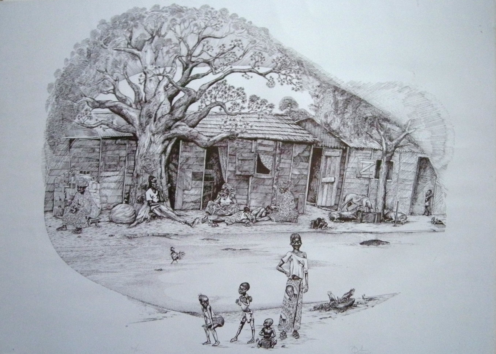

Edoardo Di Muro
1944 – 2022
Artist Biography
Edoardo Di Muro was born in Cuneo, Northern Italy and later lived a peripatetic life, initially as a sailor and then as a cartoonist, artist, author of books on African cultural figures and a political activist across Africa in the years c.1970-2005. He criss-crossed the continent from Ethiopia to South Africa, Nigeria, Angola and numerous other countries. His big break as an artist came in December 1979 when President Senghor visited an exhibition of his at Gallerie 39 in Dakar, Senegal and then invited Di Muro back to the Presidential palace and purchased a set of lithographs off him. Di Muro’s work included batiks and oils but he was primarily known for his sketches and the prints made from them. His best and most frequent subjects were of daily life in the continent, taking in tea ceremonies, market scenes and street barbers. A major retrospective of his work was held in Trieste, Italy in Autumn 2026 before travelling to Dakar, Senegal.

Tree and African family in Abidjan